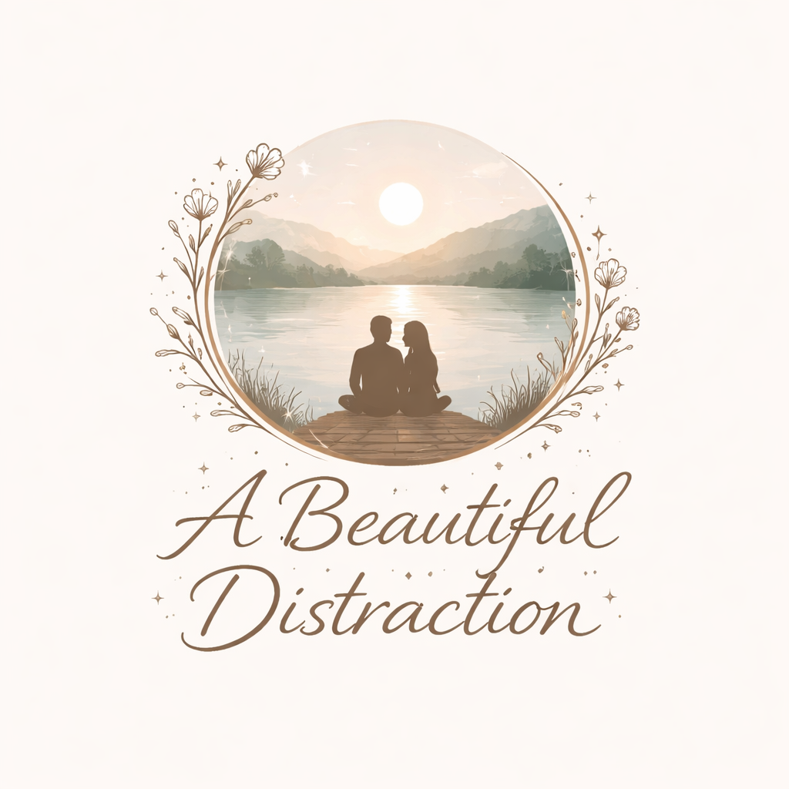

A Beautiful Distraction
Intimate songs made together — small truths, quiet moments, and music that exists outside the noise.
About
A Beautiful Distraction is an intimate music project by Michael and Eesa Heijmans.
These songs are written and recorded together — not for an algorithm, not for an audience, but for the quiet moments in between everything else.
Sometimes soft. Sometimes raw. Always honest.
Releases
A simple record of what we’ve made.
- Single — “Creep” (2026)